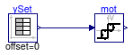

Collection of models that illustrate model use and test models
This package contains examples for the use of models that can be found in Buildings.Fluid.Actuators.Motors.
Extends from Modelica.Icons.ExamplesPackage (Icon for packages containing runnable examples).
| Name | Description |
|---|---|
| Test model for IdealMotor |
 Buildings.Fluid.Actuators.Motors.Examples.IdealMotor
Buildings.Fluid.Actuators.Motors.Examples.IdealMotor
Test model for IdealMotor

Test model for the ideal motor with hysteresis model. The motor receives at its control input a time-varying signal. It adjusts its position whenever the input signal differs from the current position by more than the hysteresis.
Extends from Modelica.Icons.Example (Icon for runnable examples).